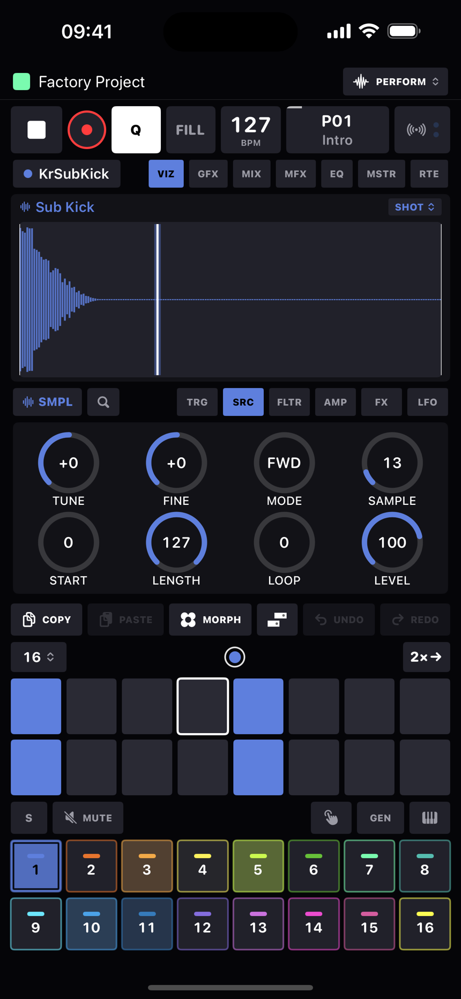
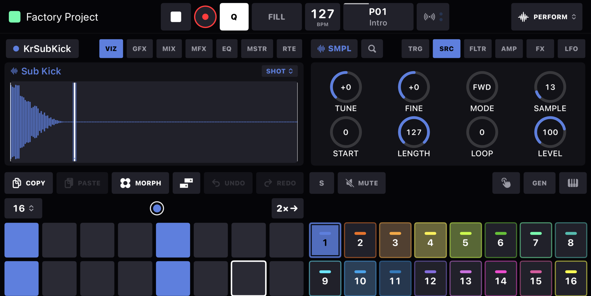
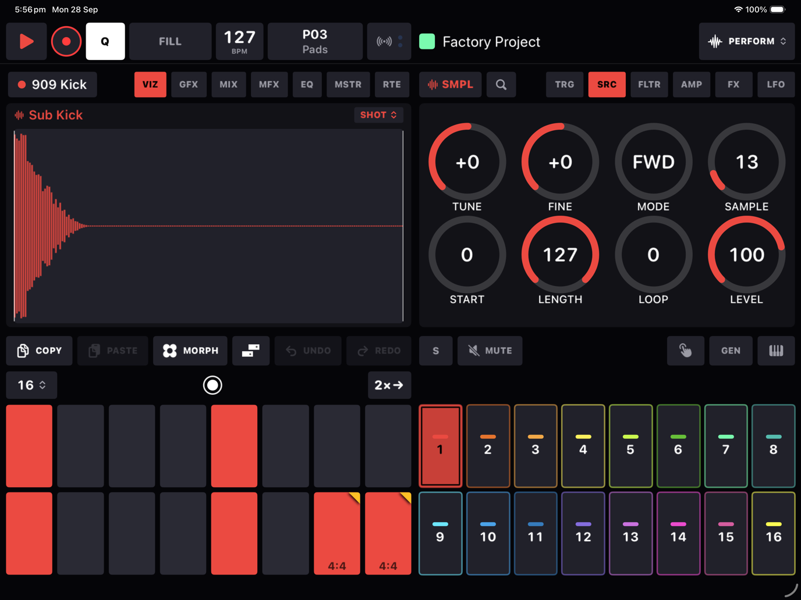

HeartBeat is a 16-track step sequencer for iPhone and iPad, with samplers, synths and a place for your hardware all living on the same grid. If you've ever written a beat on a hardware groovebox, your thumbs already know how it works. If you haven't, it's a step grid where every step can be its own little world.

Hold a step and turn a knob, and that step remembers it. Give a step a condition so it only fires on the fill, or every fourth time round, or only if the step before it played. Nudge it off the grid, roll it, stack a chord on it. Then loop a couple of bars and let every track follow. Sequencer →
A sampler with six ways of playing a sample, a fat mono synth, a poly, four-operator FM, a wavetable synth, an acid box, a drum synth, a plucked string, and an AU device that hosts whatever AUv3 instruments you've got installed. Your MIDI gear gets its own device too, with its audio coming back through the same track. Devices →
Same trigs, different view. Drag notes around, box-select a phrase and move it, stretch gates, paint velocities, drop a loop brace on the ruler. It even spells notes the way the key wants: F minor says A♭, not G♯. Piano roll →
Record from the mic, an interface, or resample the whole mix on the bar line. Then chop it, warp it to tempo, stretch it, or play it up and down the keyboard. Sampling →
Two LFOs on every track, knob moves you can record as you play, and morphs, which are snapshots of the whole kit you can crossfade between with a fader. There's always a way back to the sound you had before you started messing with it. Modulation →
Drive, chorus and ring mod on each track. A tempo delay and a plate reverb everyone can send to. A DJ page for filter sweeps and beat repeats, a three-band EQ, and a compressor you can sidechain to the kick. FX & mixer →
Plug in a keyboard over USB, Bluetooth or the network and it just plays. Map any control on screen to any knob on your controller. Send clock to the boxes you choose, and sync up with Ableton Link. MIDI & Link →
Each project is a folder in the Files app with its samples inside it, so you can copy it, back it up, or hand it to a friend. Presets work across projects, and a song bounces to a WAV in one tap. Projects →
Turn the phone and the board rearranges into a two-by-two grid, with the transport up in the header. On an iPad everything scales up with the screen, so the knobs and pads are the size they ought to be, not phone-sized buttons floating in space.

